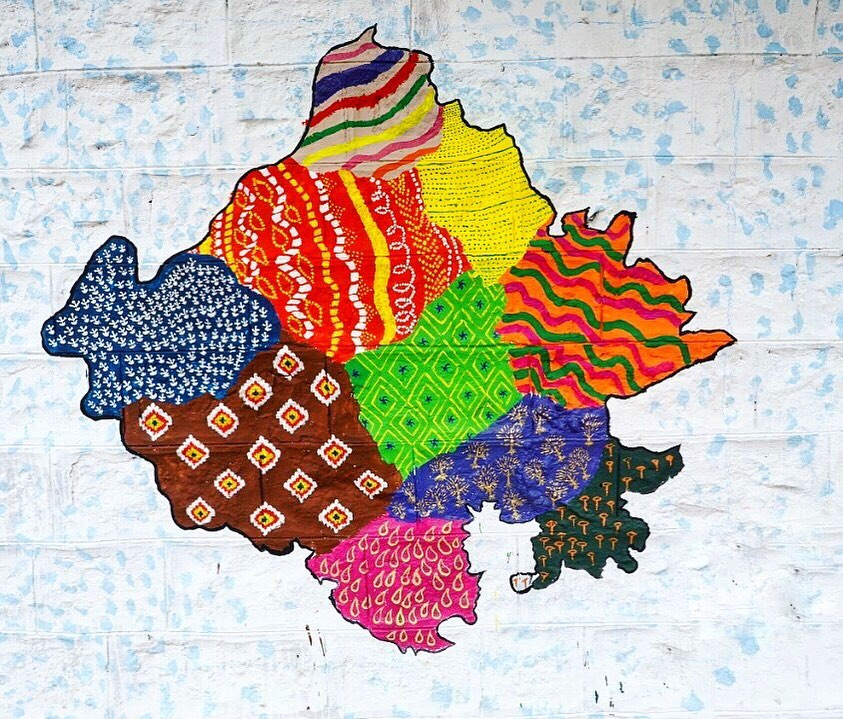

Experience the Pink City through its timeless threads.
For centuries, the artisans of Jaipur and its surrounding villages have woven stories through colors, blocks, and knots. These textiles are not merely fabrics; they are cultural archives of a vibrant desert civilization.
From the rhythmic thumping of wooden blocks in Bagru to the meticulous tying of minuscule dots in Bandhani, every piece of cloth is a testament to human hands and ancestral knowledge.
Hover over the regions to discover their distinct textile heritage.

The art of tie and dye, creating myriad dotted patterns across vibrant silks and cottons.
Wave-like patterns symbolizing the joy of the monsoon and the flowing rivers.
Earthy tones, natural dyes, and geometric floral motifs stamped with precision.
Fine detailing and vibrant colors on a pure white background, inspired by royal gardens.